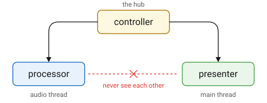

Architecture
Overview
A QPlug plugin is composed of three parts, each an ordinary class you write.

- processor
-
The DSP. Runs on the audio thread. Reads the controller’s parameters and processes audio in
process(in, out). - controller
-
The parameters and the logic that relates them, such as enabling a group of controls, units, tapering, and wiring between controls. Runs on the main thread. It is the hub the other two attach to, and is unaware of both.
- presenter
-
Builds the user interface and links it to the controller’s parameters. Owns the view, which exists only while the host has an editor open.
The processor and the presenter never see each other. Both reach the plugin’s state through the controller, which is what keeps the audio thread and the user interface independent.
Underneath sits base_plugin, the host adapter, whose header is format-free
and whose implementation lives in one file per format. Today there is one:
CLAP. VST3 and AudioUnit are produced from that same CLAP implementation by
clap-wrapper.
A Parameter, Held Twice
A controller declares its parameters and nothing else has to be written:
parameter_list gain_controller::parameters() const
{
static parameter params[] =
{
parameter{ 1, "Volume", 0_dB }.range(silence.rep, max_volume.rep)
};
return { params };
}The base holds each declared parameter twice: as an atomic double the
audio thread reads and writes, and as an Elements value_model<double> a
control links to. Both are seeded from the parameter’s initial value. The
plugin side addresses parameters by their index in the list parameters()
returns.
Holding a parameter twice is what lets the two threads work at their own
pace. When the host moves a parameter, the value lands in the atomic on the
audio thread, and the adapter asks the host for a main-thread callback.
There, update_models assigns the models whose value has actually changed,
and the GUI follows. Only the changed ones: a model assignment always
notifies, so assigning all of them would redraw the whole editor on every
callback, and a value the host echoes back mid-gesture would fight the
control the user is dragging.
The other direction starts in the GUI. A control’s binding calls
edit_parameter on the controller, which stores the atomic, sets the model,
and passes the edit on to the plugin, which queues it for the host. The
audio thread drains that queue with a try_lock at the top of process, so
it never blocks; edits it cannot take now go next time.
Either side can read a parameter as the type the plugin thinks in rather
than as a bare double:
inline gain_controller::decibel gain_controller::volume() const
{
return get_parameter<decibel>(volume_id);
}A Debug build asserts that the type asked for matches the kind the parameter was declared with.
The Plugin
plugin is the one concrete base_plugin. It composes a processor, a
controller and a presenter, and forwards each host callback to the one that
owns it: audio and MIDI to the processor, parameters and state to the
controller, everything about the editor to the presenter.
A plugin supplies four functions, and plugin does the rest:
controller_ptr make_controller();
processor_ptr make_processor(controller& ctl);
presenter_ptr make_presenter(controller& ctl);
plugin_info const& info();The controller is made first, and the other two are handed it. That is the only connection between them.
plugin_info is the plugin’s identity as the host sees it: its id, name,
vendor and version, the feature strings that tell a host what kind of
plugin it is, the size the editor opens with, and a state_version that is
bumped when what a saved parameter value means changes.
A plugin that returns nullptr from make_presenter is headless. It has no
editor, and the host is told so rather than being offered an empty window.
The Host Adapter
base_plugin is where a plugin format is met, and its header names no
format type. Every host call arrives as a plain virtual: activate,
process, midi, get_parameter, save_state, attach_view. Everything
the plugin sends out goes the other way through four members:
begin_edit, edit_parameter, end_edit and request_view_resize.
One translation unit implements those members for one format. Today that is
lib/src/clap/base_plugin.cpp, the only file that knows CLAP. Besides
forwarding, it does the work that would otherwise be spread through every
plugin:
-
Parameter ids. Hosts address parameters by id. The plugin side addresses them by index. The adapter translates both ways, so a plugin never keeps a lookup table of its own.
-
Events at the sample they belong to. A host’s events carry the frame they happen at. The adapter cuts the block where they fall and calls
processonce per piece, each with the parameters and notes that were in force for it. A processor sees a run of shorter blocks, never a block plus a pile of timestamps to reconcile. -
MIDI dialects. Notes arrive as the host chose to send them. A processor writes MIDI 1.0 overloads and hears every dialect, MIDI 2.0 among them.
-
State. The host’s stream is wrapped as a
qplug::ostreamoristream, two virtuals wide, so the controller writes its JSON into whatever the format hands it. -
What the host is offered at all. A note port only for a processor that says it wants notes, an editor only for a plugin that has a presenter.
One Implementation, Three Formats
A plugin’s own code and the QPlug adapter it links are built into one static library. clap-wrapper assembles that library into a CLAP, a VST3 and an AudioUnit v2 module, recompiling one small entry shim per format so that each binary exports the entry point under the name its format looks for.
The same code runs in all three. There is no per-format branch in a plugin and no second implementation to keep in step, which is why the formats cannot drift apart.
What Lives Where
gain, the smallest example, is a mono volume control with one automatable
parameter. Its whole source is four pairs of files:
examples/gain
├─ gain_processor.hpp/.cpp (1)
├─ gain_controller.hpp/.cpp (2)
├─ gain_presenter.hpp/.cpp (3)
└─ gain.cpp (4)| 1 | Derives from qplug::processor. Declares its channel layout and
multiplies the input by a smoothed gain. |
| 2 | Derives from qplug::controller. Declares the one parameter and reads
it back as a decibel. |
| 3 | Derives from qplug::presenter. Builds a fader in on_attach and
binds it to the parameter. |
| 4 | The four functions above. |
Everything else comes from the library. The processor inherits Q’s
audio-stream vocabulary, so process(in, out) takes the same
multi_buffer channels a Q program works with. The controller’s base holds
the parameters, writes and reads the state as JSON, and keeps factory and
user presets. The presenter’s base owns the view, carries the gestures an
edit is bracketed with, and builds the header along the top of the editor,
with the main menu, the preset the plugin is on and the zoom buttons, all of
it already wired through the controller.
A plugin’s code contains no CLAP, VST3 or AudioUnit type, and no thread synchronisation of its own.
Dependencies
All dependencies are git submodules under lib/:
- q
-
DSP
- elements
-
GUI
- infra
-
shared utilities
- clap
-
the CLAP headers
- clap-wrapper
-
VST3 and AUv2
The last two are Cycfi forks of the upstream projects, so a fix QPlug needs can be carried until it is merged. They are used as they come: anything QPlug wants from them goes through their extensions, never by editing them.
The VST3 and AudioUnit SDKs are downloaded by clap-wrapper at configure time.